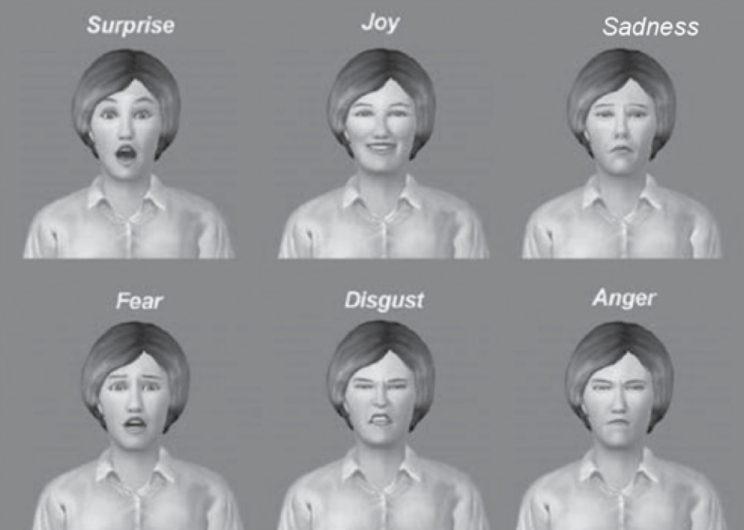

EIM08
Ekspresja emocji
Krzysztof Basiński
Twarze są ważne
- Pierwsza rzecz, którą widzi dziecko po urodzeniu
- Wszędzie widzimy twarze (chmury, grzanki, plamy Rorschacha)
- Rola w komunikacji - rozbieżność języka mówionego i pisanego
- Emotikony:
- Uwielbiam go XD
- Uwielbiam go :/
Mechanika ekspresji mimicznej
- Ekspresja za pomocą skurczów 43 mięśni twarzy
- Mięśnie twarzy przyczepione do skóry, nie do kości
- Być może ludzkie twarze mają mniej włosów niż inne gatunki, żeby ułatwić ekspresję mimiczną
- Oprócz ekspresji mimicznej, mięśnie twarzy odpowiadają za ruchy organów twarzy (usta, nos, oczy, uszy)
Mechanoreceptory na twarzy
- Mięśnie twarzy nie mają proprioreceptorów
- Tylko mechanoreceptory w skórze (wykrywające ruch) sygnalizują zmiany mimiczne
- Często ludzie “zastygają” w jakimś grymasie, nie zdając sobie z tego sprawy
Unerwienie twarzy
- Mięśnie twarzy otrzymują sygnały z mózgu poprzez neurony ruchowe wychodzące z pnia mózgu
- Siódmy nerw czaszkowy (nerw twarzowy, facial nerve) - czoło, brwi, usta
- Trzeci nerw czaszkowy (nerw okoruchowy, occulomotor nerve) - powieki, ruchy gałki ocznej, źrenicy
- Piąty nerw czaszkowy (nerw trójdzielny, trigeminal nerve) - żucie, ruchy szczęki, sygnały aferentne z mechanoreceptorów
Unerwienie twarzy
- System unerwienia dla twarzy jest znacznie bardziej skomplikowany niż dla innych części ciała
- Niektóre elementy tego systemu działają automatycznie, inne można w dużym stopniu kontrolować
- Ruchowe jądro twarzowe (? facial motor nucleus) w pniu mózgu dostaje info z kory ruchowej, ale też z okolic “emocjonalnych” (np. ciała migdałowatego)
Mięśnie twarzy
Skąd wzięły się ekspresje mimiczne
- Czy są produktem ewolucji?
- Czy są uniwersalne kulturowo?
- Jak mają się ludzkie ekspresje do ekspresji innych zwierząt?
Ewolucja i funkcje ekspresji mimicznych
- Darwin i przydatne nawyki
- Przydatność strachu, zdziwienia i obrzydzenia
Przydatne nawyki
Komunikowanie emocji u innych ssaków
- Postura
- Uszy
- Wokalizacje
- Być może u naczelnych mimika to “przerysowana” wersja ruchów potrzebnych do wokalizacji?
Wokalizacje
- U zwierząt wyższe dźwięki są przyjacielskie lub sygnalizują uległość
- Niższe sygnalizują wrogość (niski dźwięk = duże zwierze)
- Ruch twarzy przy wydawaniu wysokich dźwięków jest inny i zbliżony do ekspresji pozytywnych emocji (u ludzi i szympansów)
Ekspresje mimiczne naczelnych
- U szympansów zadowolenie objawia się uśmiechem połączonym z rytmicznymi wokalizacjami (coś jak śmiech)
- Aprobata społeczna aprobata społeczna wiąże się z innym uśmiechem
- U ludzi podobnie
- Uśmiech zadowolenia dużo trudniej “udawać” niż uśmiech aprobaty
Mimika u szympansów
Zmienność międzykulturowa
- Czy ludzie wszędzie na świecie mają takie same ekspresje emocji?
- Czy wszyscy ludzie rozumieją ekspresje innych?
Szóstka Ekmana

Szóstka Ekmana

Szóstka Ekmana - problemy metodologiczne
- Trudno jest znaleźć kultury niedoświadczone cywilizacją zachodnią
- Dobieranie etykiet do twarzy jest kiepskim metodologicznie zadaniem
Badania nad osobami niewidomymi
- Niewidomi od urodzenia nie mogą naśladować ekspresji emocjonalnej innych
- Np. olimpijczycy i niewidomi paraolimpijczycy mają bardzo podobne ekspresje radości (złoto) i smutku (srebro po przegranym pojedynku)
Badania nad osobami niewidomymi
Spory o to, co jest dziedziczone
- Być może cała, złożona ekspresja dla każdej z 6 emocji podst.
- Być może jakaś część ekspresji jest dziedziczna, reszta podatna na uczenie
- Badania raczej wskazują na drugą interpretację - mimo wszystko ludzie lepiej rozpoznają emocję przedstawicieli własnej niż obcej kultury
Ekspresje mimiczne a prawdziwe emocje
- Ekspresje mimiczne odzwierciedlają faktyczny stan emocjonalny danej osoby (read-out view)
- Ekspresje komunikują motywy osoby (to, co zamierza zrobić). Mimika ma przede wszystkim funkcję komunikacyjną (behavioral ecology view)
Ekspresje mimiczne a prawdziwe emocje
- Badania raczej wskazują na behavioral ecology
- Grając w kręgle, uśmiechamy się bardziej do ludzi niż do kręgli
- Jesteśmy “bardziej smutni”, gdy otaczają nas inni ludzie
Facial feedback hypothesis
- Nerw trójdzielny - żucie, ruchy szczęki, sygnały aferentne z mechanoreceptorów
- Facial feedback hypothesis (FFH) - ekspresje mimiczne wpływają na odczuwane stany emocjonalne
- Mocna wersja - ekspresje powodują emocje
- Słaba wersja - ekspresje modulują emocje
- Put on a happy face
FFH - dane empiryczne
- W eksperymentalnej indukcji emocji, badani mają za zadanie:
- Przesadnie reagować mimicznie (skutkuje zwiększeniem intensywności emocji)
- Tłumić reakcje mimiczne (skutkuje zmniejszeniem intensywności emocji)
- Działa dla emocjonalnych filmów, szoków elektrycznych, zapachów czy wyobrażonych sytuacji
- Możliwy efekt oczekiwania ze strony badanego
FFH - Strack, Martin i Stepper, 1988
- Badani oglądali śmieszne kreskówki trzymając długopis:
- zębami (wspomaga uśmiech)
- ustami (utrudnia uśmiech)
- w dłoni (kontrola)
- Wyniki spójne z FFH
- Ale uwaga! Możliwy problem z replikowalnością!
FFH - użyteczność kliniczna
- Pacjenci z MDD dostający zastrzyki z botoxu czuli się lepiej (Finzi i Rosenthal, 2014)
- U pacjentów z paraliżem twarzy, większy stopień paraliżu “mięśnia uśmiechu” (zygomatic muscle) wiązał się z wyższą intensywnością objawów depresji (VanSwearingen, Cohn, & Bajaj-Luthra, 1999).
- Efekty istotne, ale bardzo słabe
Ciało a ekspresja emocji
- Emocje widać nie tylko na twarzy
- Zwierzęta sygnalizują emocje posturą
Film o point light display
Point light display
- Wysoka zdolność rozpoznawania emocji przy braku informacji mimicznych
Emocje w głosie
- Zwierzęta sygnalizują emocje wokalizacją
- Język pisany “uboższy” od mówionego - prozodia mowy
- Można badać charakterystykę akustyczną głosu
Emocje w głosie
- Dobre powody by sądzić, że w głosie słychać pobudzenie
- Specyficzne emocje trudne do wykrycia
- Np. gniew i radość wiążą się z podobnymi zmianami wysokości i głośności głosu (dlatego, że są jednocześnie wysokim pobudzeniem?)
Emocje w głosie
- Być może o emocjach świadczy cały zestaw cech akustycznych (attack, jitter, nosowość, gardłowość)
- Są to cechy trudno rozpoznawalne automatycznie, ale możliwe do rozpoznania przez wytrenowanych słuchaczy
- Być może jednym ze źródeł powstania muzyki są emocjonalne wokalizacje
Emocje w głosie
- Można też odtwarzać głosy “zwykłym ludziom” i oceniać konsensus w rozpoznawaniu emocji
- Konsensus ten jest wysoki dla gniewu, strachu, radości, smutku, niezależnie od języka i kultury (Sauter et al., 2010)
Afekt a cechy akustyczne wokalizacji (Snowdon & Tele, 2013)